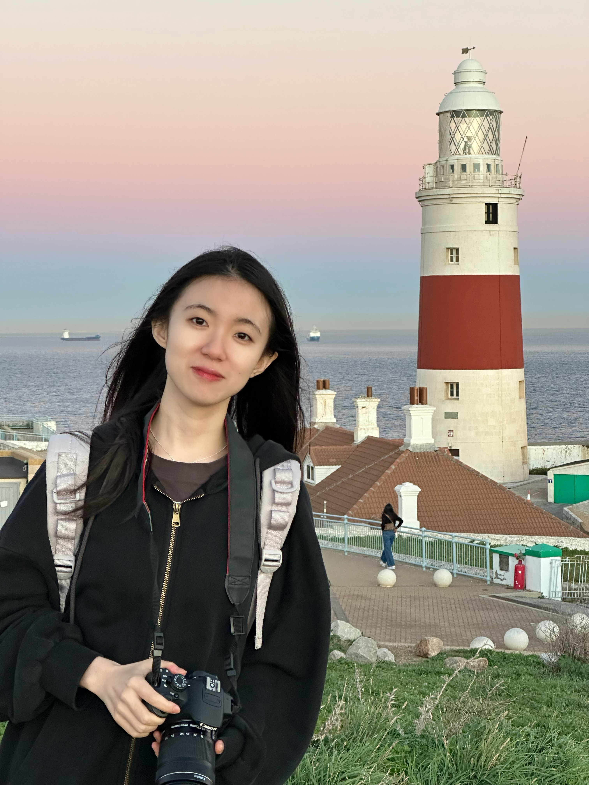

Jinghan SunPh.D. Candidate
Xiamen University |

|

{kind=link}
Biography
I am currently a third-year Ph.D. candidate at Xiamen University, under the supervision of Prof. Liansheng Wang. Additionally, I am a visiting student at The University of Edinburgh, where I am supervised by Prof. Sotirios A. Tsaftaris. Since 2020, I have been an intern at Tencent Youtu Jarvis Center, led by Dr. Yefeng Zheng (IEEE Fellow) and supervised by Dr. Dong Wei.
My research aims to advance medical image analysis using AI, striving for affordable and accurate medical decision-making. My recent focus includes 1) vision-language models, 2) few-shot learning, and 3) Diffusion-based generative AI.
Professional Services
-
Regular Reviewers/PC Member:
Computer Vision and Pattern Recognition (CVPR)
International Conference on Medical Image Computing and Computer-Assisted Intervention (MICCAI)
IEEE Transactions on Medical Imaging (TMI)
IEEE Journal of Biomedical and Health Informatics (J-BHI)
Neurocomputing
Misc.
I love playing piano and guitar, producing music, creating motion graphics, and doing outdoor activities like skateboarding and surfing.